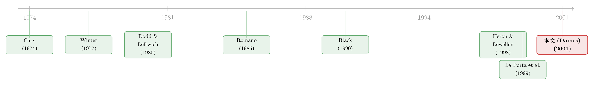

租来的法律，凭什么让公司更值钱？
本文读的是 Daines (2001, Journal of Financial Economics)：用托宾 Q (Tobin's Q) 度量公司价值，在 1981–1996 年 4,481 家美国上市公司的大样本里，作者发现注册在特拉华州 (Delaware) 的公司，价值显著更高——控制了规模、行业、成长性、盈利、分散度乃至公司固定效应之后，托宾 Q 仍高出约 0.07（折成市值大约高 5%）。而它之所以更值钱，一个关键线索是：特拉华公司更容易收到收购要约、更容易被卖掉。
1 一个吵了三十年的问题
先说一个很多人没意识到的事实：在美国，决定一家公司"游戏规则"的，不是它在哪里办公，而是它在哪里注册。
这是所谓「内部事务原则 (internal affairs rule)」：股东有什么权利、董事负什么义务、并购的好处怎么分，统统由公司注册地那个州的公司法说了算，而跟它实际在哪经营无关。一家总部在加州、工厂在德州的公司，只要注册在特拉华，它的治理就讲特拉华的"普通话"。
而特拉华，是这套游戏里压倒性的赢家。超过一半的美国上市公司注册在那里，排第二的纽约州连 5% 都不到。财富 500 强里大约半数、全美 60% 以上的上市资产、几乎所有的大型收购战，背后都站着特拉华公司法。一个面积、人口都不起眼的小州，凭一部公司法，几乎垄断了"给美国公司立规矩"这门生意。
于是一个自然的问题是：特拉华到底在替谁立规矩？
这正是金融与法律交叉处吵了几十年的一桩公案。一派的代表是 Cary (1974)：他注意到特拉华财政收入里大约 20% 来自公司注册费，于是断言——这个州为了抢生意，必然讨好那些手握"去哪注册"决定权的经理人，写出一堆对管理层过度宽松的规则，由此带动各州一场「逐底竞争 (race to the bottom)」。在他笔下，特拉华是"一个在 50 个州中的侏儒，却为了招揽注册而践踏全国性的公司政策"。既然这种法律损害股东财富，那唯一的解药就是联邦立法、统一标准（这一主张后来由 Bebchuk, 1992 等人接力）。
另一派的代表是 Winter (1977)：他反过来说，资本市场、产品市场、公司控制权市场的竞争压力，会逼着各州去提供、也逼着发行人去挑选能最大化股东福利的规则。特拉华所谓的"宽松"，恰恰是给了缔约方定制合约、压低代理成本的空间——这是一场「逐顶竞争 (race to the top)」（Easterbrook & Fischel, 1991）。
还有第三种声音更釜底抽薪：注册地根本无所谓。Black (1990) 那篇著名的《公司法琐碎吗？》就认为，企业家完全可以通过定制证券条款、章程条款、薪酬与董事会安排，把各州法律的差异"抹平"，于是选哪个州注册是一件无关紧要的小事。这种看法甚至悄悄写进了大量公司治理实证研究的默认假设里——大家干脆把"注册地"当成同质的、与业绩无关的变量，根本不放进控制变量。
三种说法针锋相对，可一个尴尬的事实是：吵了三十年，谁也没能拿出干净的、大样本的证据，来回答那个最朴素的实证问题——特拉华的法律，到底是抬高了，还是压低了公司价值？
2 旧办法为什么不灵：事件研究的两难
在 Daines 之前，主流的做法是「事件研究 (event study)」：盯住那些重新注册 (reincorporation) 的公司，看它们宣布迁去特拉华那一刻，股价有没有异常反应。
这条线积累了不少结果，但合在一起却是一笔糊涂账。Dodd and Leftwich (1980) 查了 1927–1977 年间 140 家重新注册的公司，发现宣布当时没有显著异常收益，倒是注册前两年股价表现不错。Netter and Poulsen (1989)、Peterson (1988) 等则报告了正的收益——但 Peterson 补了一刀：如果迁册是为了给自己加装反收购的"防御工事"，正收益就消失了。最完整的是 Romano (1985)：她发现股东能不能受益，取决于为什么搬——那些把迁册当作并购计划一部分的公司有显著正收益，而 Heron and Lewellen (1998) 进一步发现，借迁册顺手给董事"减责"的公司股价会涨，其他的则不涨。
这些研究的最大公约数是：没有任何一篇找到特拉华法律损害公司价值的清晰证据。但"没有证据证明有害"远不等于"有证据证明有益"。
接着，一个自然的问题是：事件研究为什么没能一锤定音？Daines 点出了三处硬伤。
其一，信号被搅浑了。迁去特拉华的公司，往往同时启动并购计划（本身就伴随正收益，Schipper and Thompson, 1983）或加装反收购条款（被认为损害价值）。两股力量缠在一起，迁册本身的效果根本剥不出来。
其二，方向被混为一谈。这些研究通常不区分"迁入特拉华"和"迁出特拉华"，而是把所有重新注册的公司一锅烩，重要信息就这样被平均掉了。
其三，也是最致命的——样本根本不具代表性。愿意重新注册的公司，是一群正在做出"其他重大改变"的特殊公司。绝大多数公司上市之后从不重新注册。如果只有"迁册能增值"的公司才去迁册，那么"迁册公司有正收益"完全可能与"特拉华法律本身有没有价值"是两码事。换句话说，你研究的是被高度自选择 (self-selected) 的一小撮，却想推断对沉默的大多数的影响。
这正是这篇论文换一种打法的起点。
3 换一个问题：不看"谁搬家"，看"谁更贵"
真正关键的一步，是 Daines 把问题整个翻了过来。
与其去追那少数"搬了家"的公司，不如直接问：在任意一个横截面上，把全体上市公司摆在一起——注册在特拉华的，是不是系统性地更值钱？
逻辑朴素得近乎天真：如果投资者真的愿意为"受特拉华法律管辖的资产"多掏钱，那么特拉华公司就该更贵；如果投资者要为此打折，它们就该更便宜；如果法律真像 Black 说的那样无关紧要，那注册地就不该对价值有任何系统性影响。法律，在这里被当成一种无形资产 (intangible asset)——它可以有正价值，也可以有负价值。
衡量"贵不贵"的尺子，是「托宾 Q (Tobin's Q)」：公司市值除以其资产重置成本。这个比率反映的是一家公司的投资或成长机会——包括管理层和公司法规则所添加的那部分价值。于是思路就清楚了：在控制住规模、分散度、行业、投资机会、盈利能力之后，特拉华公司与非特拉华公司之间剩下的那点托宾 Q 之差，就可以归因于特拉华的法律。
这里有一个不容易被注意、却很要命的方法论选择：为什么用"价值"（托宾 Q）而不用"股票收益"？因为如果投资者是理性的、能提前预判特拉华规则的影响，他们一开始就会为特拉华公司多付（或少付）钱，于是事后的股票收益反而不该因注册地不同而不同。事实也正是如此——特拉华公司并没有不一样的股价表现，也没有不一样的会计盈利（Romano, 1996; Baysinger and Butler, 1985）。价值差体现在价格的水平上，而不在收益的斜率上。盯着收益看，恰恰会看不见法律的效果。
具体的回归设定，可以写成这样一个把价值拆开来看的式子：
控制变量的选择都有清楚的先验：盈利（ROA）应正向影响价值；研发支出（按资产标准化）作为投资机会的代理，应与 Q 正相关（McConnell and Servaes, 1990）；多元化经营在样本期内拉低 Q（Lang and Stulz, 1994; Berger and Ofek, 1995），于是放进"业务分部数"；规模用 log 销售额控制。
4 数据与结果：那个稳得出奇的 0.07
数据。样本取自 Compustat 工业企业数据库，并刻意纳入 Compustat 的研究档案（即已被收购或破产的公司），以压低幸存偏差 (survivorship bias)。剔除了受联邦监管显著不同的公用事业、银行与金融公司。要求公司在资产、销售、股价、注册州上有数据，且至少有 5 个年度的数据，还要有业务分部数。为避免极端值，作者把托宾 Q 最高和最低各 1% 的观测裁掉。最终得到 4,481 家公司、47,001 个公司-年，覆盖 1981–1996 年。
值得一提的是托宾 Q 的算法刻意从简：普通股市值用财年末股价乘股数，优先股和债务以账面值近似市值，重置成本用资产账面值近似。作者承认这粗糙，但它产生的系数估计"符号无偏、而且偏保守"（Perfect and Wiles, 1994）——也就是说，这把尺子如果有偏，是往"更难做出显著结果"的方向偏。换一套更复杂的 Q 算法，结论不变。
第一块结果，朴素而扎实。只控制注册地、行业和年份的混合 OLS 里，特拉华公司的托宾 Q 比别处高 0.074（p 值 0.001）。加进上面那一整套控制变量后，系数几乎纹丝不动，0.073（p 值 0.001）。
接着，一个自然的担心是：会不会只是某几年、某段牛市的偶然？于是作者把模型逐年重新估了一遍，16 年估了 16 次。结果是：特拉华公司每一年都更值钱，其中 12 年显著更值钱。年度系数从 1989 年的低点 0.03 到 1986、1993 年的高点 0.14 不等；在 1% 水平上显著的有 7 年，5% 水平 1 年，10% 水平 4 年。更进一步，把特拉华虚拟变量与各年虚拟变量做交互，没有任何一个交互项显著异于零，联合检验也拒绝不了"它们全相等"——这个溢价不随时间漂移，是个长期稳定的现象。
第二块结果，是对内生性的第一道防线。托宾 Q 很可能被一些看不见的公司异质性驱动（比如"好公司"天生就既值钱、又恰好选了特拉华）。于是作者上了公司固定效应 (firm fixed effects) 模型，给每家公司一个自己的截距，只用公司自身随时间的变化来识别。结果不但没消失，反而更大了：系数 0.14，1% 水平显著。组内估计与组间估计都显著为正。
这个差有多大经济意义？以 1996 年的横截面为例，0.07 的托宾 Q 之差，约对应5% 的市值——按当年中位数市值约 2.25 亿美元算，等于多出约 $12 million。即便把 Q 最高最低各 10% 裁掉（理由是公司法很难解释极端估值），差距缩到 1–2%，仍然实打实地存在。
把这串数字串起来看：一个跨越 16 年、扛得住公司固定效应、扛得住各种控制、还扛得住极端值裁剪的 0.07，已经强烈暗示——投资者确实在为"特拉华法律"这件无形资产付费。
5 真正的反转：它更值钱，是因为更"好卖"
到这里，论文其实只回答了"是不是"，还没回答"为什么"。而这恰恰是全文最精彩的一步反转。
按照 Cary 那一派几十年的批评，特拉华法律最被诟病的地方，正是它的收购法对在任管理层格外保护——这本该让特拉华公司更难被收购、从而更适合经理人躲清静。可如果真是这样，"被保护得舒舒服服的经理人"为什么会让公司更值钱？
于是 Daines 去查了并购数据。结果出人意料：特拉华公司显著更可能收到收购要约、也更可能真的被收购。反过来，他还发现：注册在那些给敌意收购设置了重重法律壁垒的州的公司，价值显著更低，收到的要约可能也更少。
两条证据一对照，故事就立住了：特拉华法律之所以抬高价值，关键机制在于它便利了上市公司的"出售"。一家更容易被卖掉的公司，意味着控制权市场对它的纪律约束更强、潜在的收购溢价更可期——这些都会被投资者提前贴到今天的价格里。这也顺手回敬了 Cary 的"逐底竞争"论：一个让公司更容易被卖、从而更值钱的州，很难说是在领着大家"逐底"。
（关于"市场对控制权的定价、以及法律如何决定控制权能值多少钱"，这条线在跨国层面也有呼应，可参见《同一家公司，两种股票，两个价格——控制权的价钱，写在一国的法律里》。）
6 把内生性逼到墙角
一篇横截面论文，最容易挨的一刀永远是：因果方向。会不会不是"特拉华法律让公司值钱"，而是"本来就值钱、本来就打算被卖的公司，自己挑了特拉华"？论文的第 5 节专门来挡这一刀。
第一，公司固定效应已经吸收掉了不随时间变化的公司异质性——如果溢价纯粹来自"好公司爱选特拉华"这种固定特质，组内估计本该把它清零，可它反而更大了。
第二，看 IPO 公司。作者单独考察刚上市的公司（这些公司的注册地选择尚未被后续的重大战略改变污染），结论依然成立；对成熟公司（资产年龄差异影响更小）也单独估了，同样成立。顺带一提，关于"公司年龄"的一个细节很能说明作者的谨慎：Romano (1985) 发现特拉华公司更年轻、资产折旧更少，这本会让特拉华公司的托宾 Q 被向下压（保守方向），所以年龄差异如果有影响，也是在跟作者的结论作对，而非帮忙。
应当老实说：这些都还属于"用更干净的子样本 + 固定效应"来逼近因果，而非一个真正外生的冲击。论文标题用的是"improve"，但它给出的最硬的事实，是一种长期、稳健、且与并购活动相联系的相关性——作者对此其实相当克制。
7 文献脉络
把这条线索拉直了看，它的演进很有戏剧性。
最早，是一场纯粹的规范之争：Cary (1974) 的"逐底竞争"对阵 Winter (1977) 的"逐顶竞争"，一个说特拉华讨好经理人、需要联邦立法来管，一个说市场竞争会逼出对股东最优的规则。紧接着，Black (1990) 抛出"公司法琐碎论"，干脆质疑这场争论有没有意义。
与此同时，实证派沿着事件研究往前走：Dodd and Leftwich (1980) 开了头，Romano (1985)、Heron and Lewellen (1998) 把"为什么迁册"拆得越来越细，结论却始终是"不清晰的混合"。
这篇论文的位置，是给这条几十年的争论换了一种实证打法：放弃"追踪迁册者"，转而做第一份大样本、横截面的价值证据。它在精神上和同年的 La Porta, Lopez-de-Silanes, Shleifer and Vishny (1999)——用投资者保护解释跨国公司估值——是同一脉的：法律即价值。只不过 LLSV 看的是国与国，Daines 看的是美国一国之内的州与州。

把视角再拉远一点：用"租一部更好的法律来给自己增值"这个母题去看，Daines 的州内故事，和"公司把股票挂到美国、靠借用更严的法律来向小股东做出承诺"的跨境故事其实是一枚硬币的两面（可参见《租来的法律：把股票挂到纽约，真能管住自家的老板吗？》与《把法律写成一个「被抓的概率」：投资者保护如何长出一国的股市》）。
8 评论与延伸（Q&A + 研究方向）
(a) 几个可能的疑问
Q：用托宾 Q 当"公司价值"，会不会本身就有偏？
会，但偏的方向对作者有利。这里的 Q 是粗算的（债务和优先股用账面值近似市值），Perfect and Wiles (1994) 指出这种简化会让系数偏保守。再加上特拉华公司更年轻、资产折旧更少，也会把它们的 Q 往下压。也就是说，几处可能的偏误都在"让结果更难显著"的方向上，
0.07反而更可信。
Q：横截面回归怎么能谈"改善"价值？这不是相关性吗？
这是这篇论文最该被追问的地方。标题里的 "improve" 确实超出了相关性能直接支撑的范围。作者的防线是公司固定效应（用公司自身变化识别）、IPO 子样本、成熟公司子样本，把"好公司自选择特拉华"这类故事尽量挤掉。但它终究没有一个外生冲击，所以更稳妥的读法是："长期稳健、且与并购机制一致的强相关"。
Q：如果 Black 说得对、注册地无所谓，结果不就该是零吗？为什么不是？
正是这篇论文对"琐碎论"最直接的反驳。如果企业真能靠定制章程、薪酬、董事会安排把各州法律差异抹平，那特拉华溢价就该被这些"替代性安排"消化掉、归于零。可它跨越十几年、扛住固定效应仍然是
0.07——说明这种缔约并没有补偿掉特拉华的优势。法律，确实是证券设计里一个被长期忽视的真实维度。
Q：特拉华更容易被收购，可它的收购法不是出了名地"保护经理人"吗？这不矛盾？
表面矛盾，恰是论文的反转所在。数据说特拉华公司更可能收到要约、更可能被收购，而设了高反收购壁垒的州里的公司反而更便宜。这说明"特拉华便利公司出售"这条机制在数据上占了上风——至少在样本期内，特拉华法律净效果是让控制权市场更通畅，而非把公司锁死。
Q：银行、公用事业被剔除了，会不会把结论做窄了？
剔除是有道理的：这些行业受联邦监管显著不同，而且它们的收购规则由经营地而非注册地决定，会破坏"内部事务原则"这个识别基础。代价是结论不能外推到金融业。对今天关心银行、信用市场的人来说，这反而留了一个有趣的缺口（见下）。
Q：这个 0.07 的溢价，今天还在吗？
论文只覆盖到 1996 年。此后特拉华的判例、各州反收购立法、以及并购市场本身都变了不少。溢价是否随"特拉华便利出售"这一机制的强弱而消长，是一个开放问题——而论文给出的逐年估计恰好提供了可以接着往下接的方法论模板。
(b) 几个可能的研究问题与提案
1. 特拉华法律与公司债定价 / 信用利差。 - 【经济故事】这篇论文说特拉华便利"出售公司"、强化控制权市场，对股东是好事。但收购、杠杆收购对债权人常常是坏消息（资产替代、杠杆抬升）。那么特拉华公司的信用利差是否系统性更宽？换言之，股东拿到的那 5% 溢价，有没有一部分是从债权人兜里转移过来的？ - 【可行性】高。用 TRACE 公司债成交数据 + Compustat 注册地，控制评级、久期、行业，比较特拉华与非特拉华发行人的利差。识别上可借鉴本文的公司固定效应 + 行业-年份固定效应。难点是注册地与债券契约条款的内生选择，可用各州反收购立法的时点变化做准自然实验。
2. 反收购立法作为外生冲击，给 Daines 补上因果。 - 【经济故事】本文最大的软肋是缺外生变异。而美国各州在 1980–90 年代先后通过了形态各异的反收购法（control share、business combination 等），构成一系列交错的法律冲击。可以用这些立法的州-时点变化，做交错双重差分，检验"法律变严→公司价值下降、被收购概率下降"。 - 【可行性】中。立法时点数据可得（Romano, 1987; Comment and Schwert, 1995 等已整理）。但要警惕交错 DiD 的负权重问题（关于这点可参见《当「更稳健」的设计悄悄把符号弄反了——重读交错双重差分》），需用新一代估计量。
3. 外资持有人对"注册地溢价"的态度。 - 【经济故事】外国机构投资者通常更看重少数股东保护与控制权市场的通畅。那么特拉华溢价是否在外资持股更高的公司里更大？这相当于把 LLSV 的"投资者保护"叙事与本文的"州内法律"叙事接起来。 - 【可行性】中。13F + Thomson 机构持股数据可得，可识别外资份额。挑战在于持股本身内生于价值，需要工具变量（如指数纳入、被动资金流）来处理反向因果。
4. 重新注册的"方向"分解。 - 【经济故事】本文批评事件研究混淆了"迁入"与"迁出"。那么干脆把方向分开：迁入特拉华 vs 迁出特拉华，价值与后续被收购概率是否真的不对称？这能直接检验"特拉华便利出售"机制。 - 【可行性】高。数据要求不高（代理声明 + 10-K 的迁册记录），主要是把旧事件研究按方向、按动机重做一遍，配上现代的稳健推断。
参考文献
- Baysinger, B.D., Butler, H.N. (1985). The role of corporate law in the theory of the firm. Journal of Law and Economics 28, 179–191.
- Bebchuk, L. (1992). Federalism and the corporation: the desirable limits on state competition. Harvard Law Review 105, 1435–1510.
- Berger, P., Ofek, E. (1995). Diversification's effect on firm value. Journal of Financial Economics 37, 39–66.
- Black, B. (1990). Is corporate law trivial? A political and economic analysis. Northwestern Law Review 84, 542–597.
- Cary, W. (1974). Federalism and corporate law: reflections upon Delaware. Yale Law Journal 83, 663–705.
- Comment, R., Schwert, R. (1995). Poison or placebo? Journal of Financial Economics 39(1), 3–43.
- Daines, R. (2001). Does Delaware law improve firm value? Journal of Financial Economics 62(3), 525–558.
- Dodd, P., Leftwich, R. (1980). The market for corporate charters: "unhealthy competition" versus federal regulation. Journal of Business 53, 259–283.
- Easterbrook, F., Fischel, D. (1991). The Economic Structure of Corporate Law. Harvard University Press, Cambridge, MA.
- Heron, R.A., Lewellen, W.G. (1998). An empirical analysis of the reincorporation decision. Journal of Financial and Quantitative Analysis 33, 549–568.
- Lang, L., Stulz, R. (1994). Tobin's Q, diversification, and firm performance. Journal of Political Economy 102, 1248–1280.
- La Porta, R., Lopez-de-Silanes, F., Shleifer, A., Vishny, R. (1999). Investor protection and corporate valuation. Working paper.
- McConnell, J., Servaes, H. (1990). Additional evidence on equity ownership and corporate value. Journal of Financial Economics 27, 595–612.
- Perfect, S.B., Wiles, K.W. (1994). Alternative constructions of Tobin's Q: an empirical comparison. Journal of Empirical Finance 1, 313–341.
- Peterson, P. (1988). Reincorporation: motives and shareholder wealth. The Financial Review 23, 151–160.
- Romano, R. (1985). Law as a product: some pieces of the incorporation puzzle. Journal of Law, Economics and Organization 1, 225–283.
- Romano, R. (1987). The political economy of takeover statutes. Virginia Law Review 73, 111–199.
- Schipper, K., Thompson, R. (1983). Evidence on the capitalized value of merger activity for acquiring firms. Journal of Financial Economics 11, 85–119.
- White, H. (1980). A heteroskedasticity-consistent covariance matrix estimator and a direct test for heteroskedasticity. Econometrica 48, 817–838.
- Winter, R.K. (1977). State law, shareholder protection, and the theory of the corporation. Journal of Legal Studies 6, 251–292.